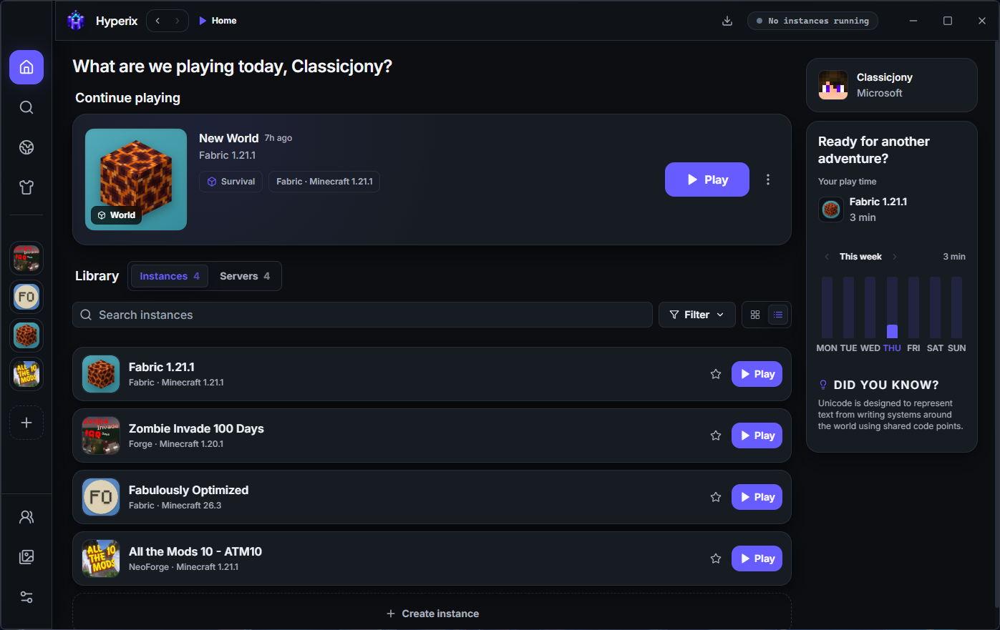
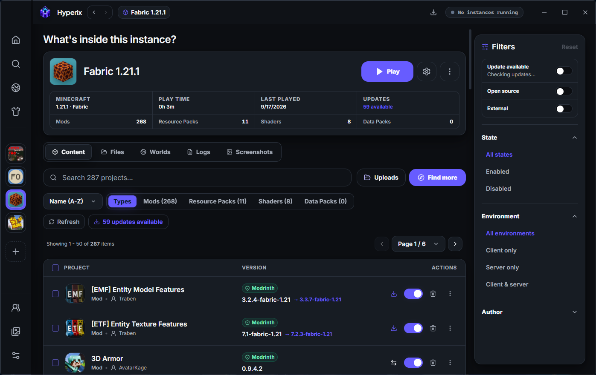
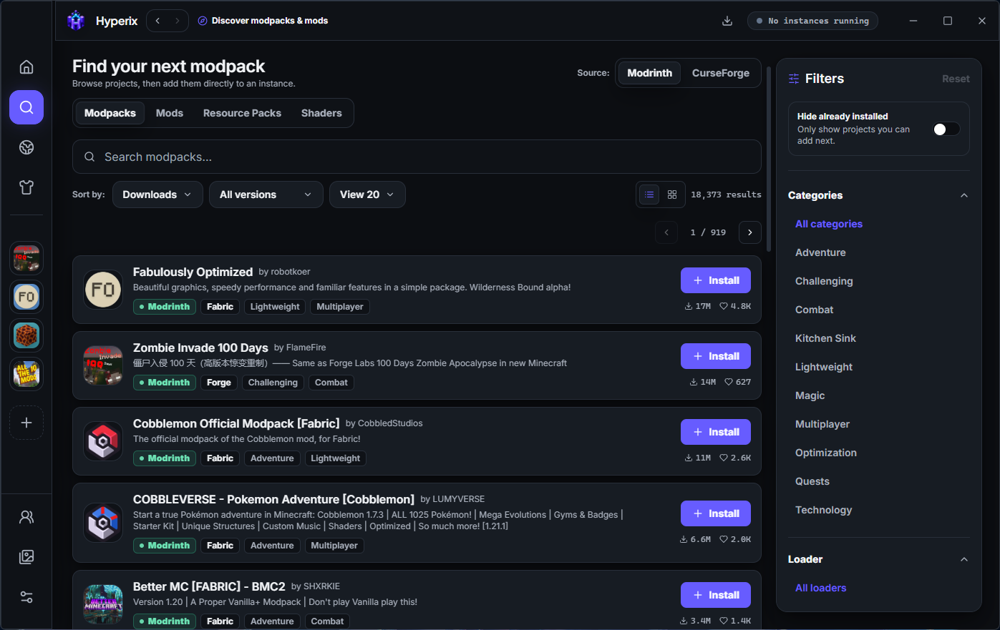
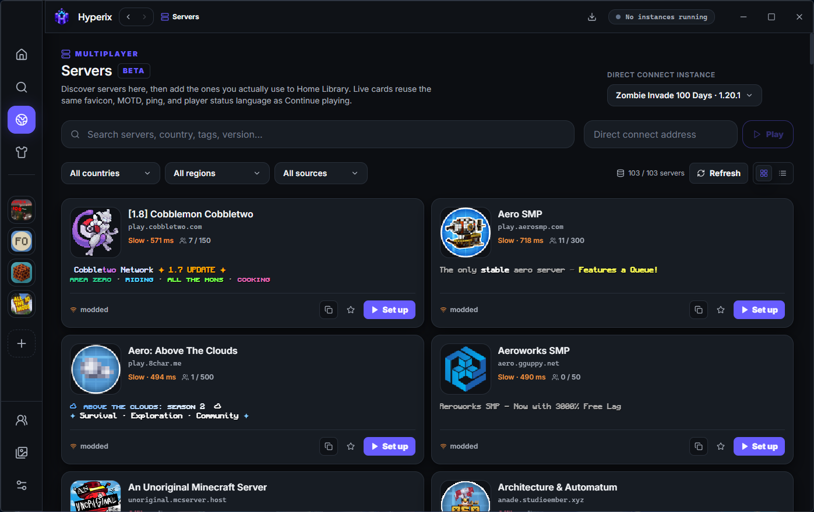
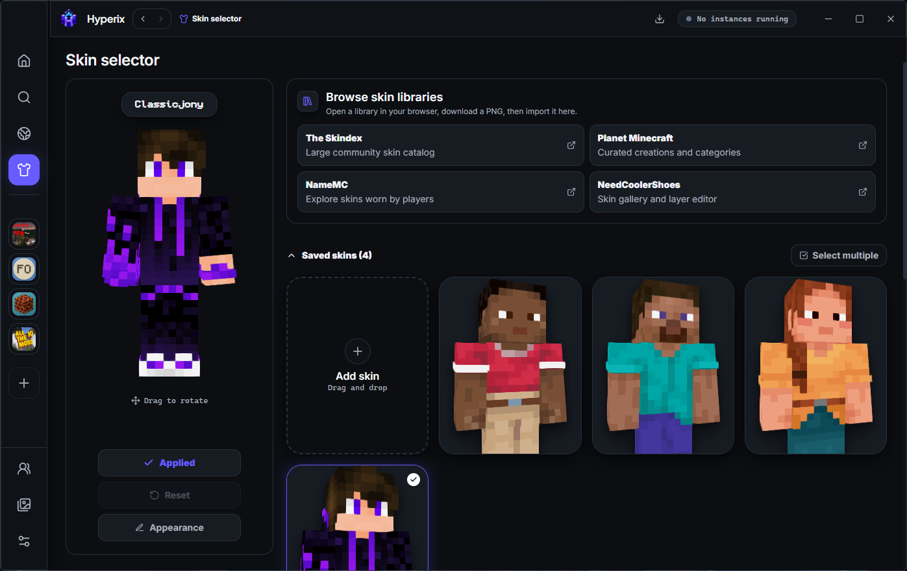

A world for every playstyle
Keep each Minecraft experience distinct, with its own worlds, mods, and settings — precisely where they belong.
Independent Minecraft desktop launcher
Hyperix helps players create and manage isolated Minecraft instances, organize local content, and understand what belongs to each setup.
EXPLORE HYPERIXKeep each Minecraft experience distinct, with its own worlds, mods, and settings — precisely where they belong.
Find what you need, refine your setup, and stay in control of the details without the clutter.
Explore community creations through official sources, with the choices of their authors always respected.
MULTIPLAYER PREVIEW / PLAY WITH FRIENDS
Open your Minecraft world, invite friends, and explore together — without manually opening a public Minecraft port.
A more natural way to play together is taking shape: host an existing world or a managed Vanilla server, share a room, and let friends join without exposing a public Minecraft port.
Start from an existing world or a managed Vanilla server.
Create a room and share an invitation with the people you choose.
Connect through Hyperix while your Minecraft world stays under your control.
Technical preview. Internet P2P/relay compatibility, cross-network gameplay, and production rollout are still being validated. Not included in the current stable download.
COMMUNITY CONTENT / 01—02
Discover Minecraft creations from two established community platforms.
Explore mods, modpacks, resource packs, and shaders shared by the Minecraft community on Modrinth.
Explore Modrinth ↗Find community-made Minecraft mods, modpacks, and resource packs in the CurseForge catalog.
Explore CurseForge ↗Modrinth and CurseForge are independent platforms. Their names and logos belong to their respective owners.
A closer look





Version history
Hyperix 1.1.9 mang đến hỗ trợ CurseForge toàn diện, theo dõi nội dung instance thời gian thực, hiển thị tiến trình tải trên Taskbar Windows và tinh chỉnh giao diện hộp thoại mượt mà.
Hyperix 1.1.8 improves instance content management and settings, adds safer Modrinth included-content filtering, and fixes UI layering.
Content providers
Hyperix uses official provider APIs for compatible Minecraft content discovery. It does not scrape provider websites, re-host files, bypass author restrictions, or present creator content as its own.
For CurseForge, a project is downloaded only where the creator has explicitly approved third-party distribution. Otherwise, Hyperix directs the player to the official project page.
Project status
Hyperix is certified on the Microsoft Store and available as an independent release. It is a non-commercial project with no advertisements, subscriptions, paid tiers, or bundled third-party software.